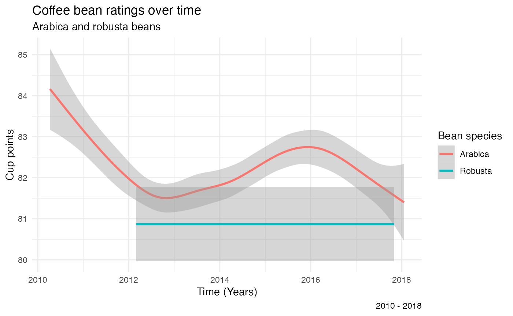
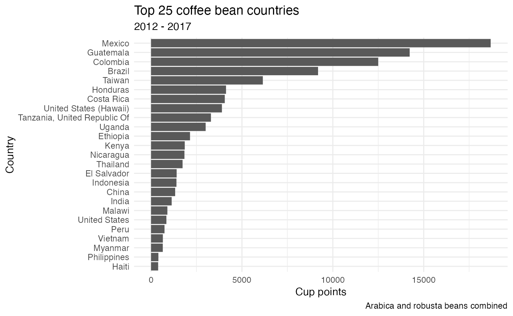
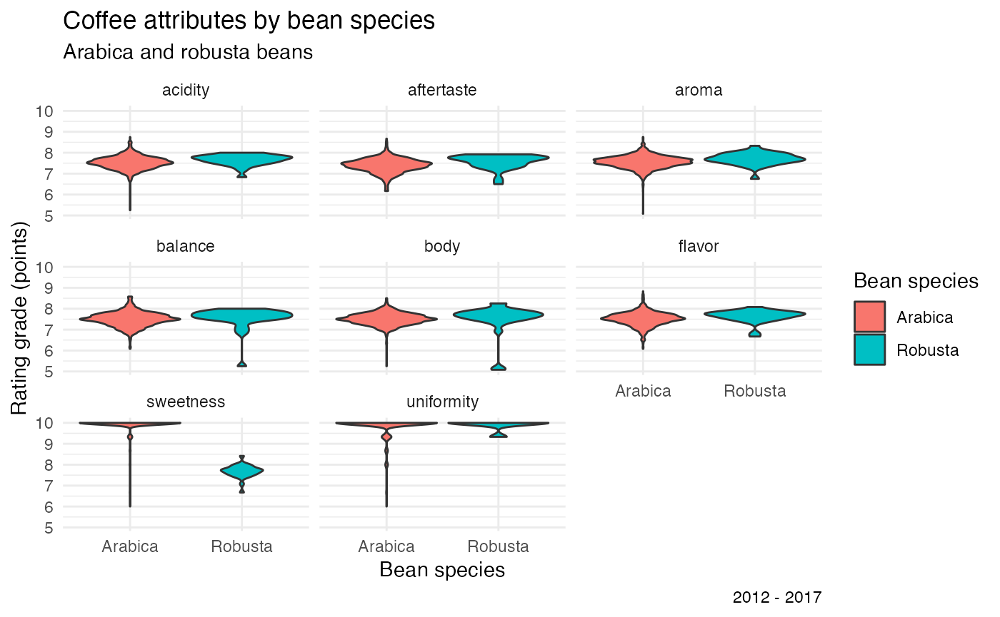
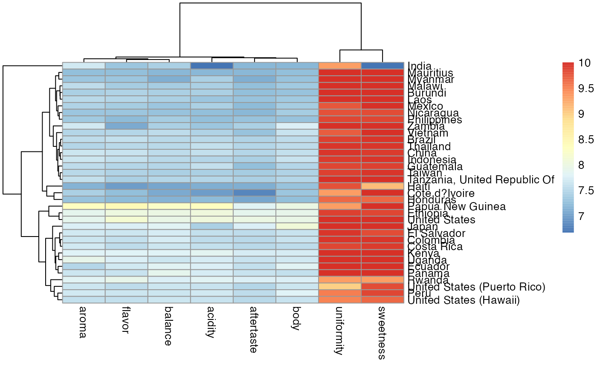
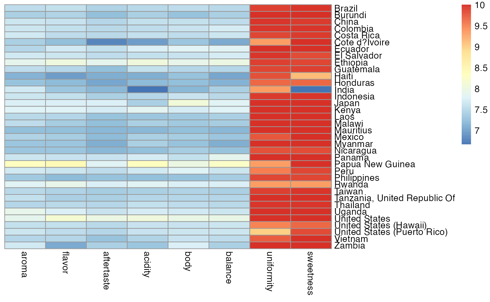
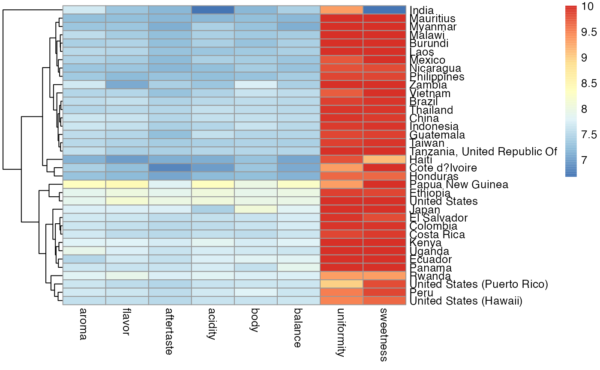

Example analysis
example_analysis.Rmd
library(pheatmap)
library(here)
#> here() starts at /Users/carolinerwensel/Desktop/stat programming/pheatmap
library(tidyverse)
#> ── Attaching packages
#> ───────────────────────────────────────
#> tidyverse 1.3.2 ──
#> ✔ ggplot2 3.3.6 ✔ purrr 0.3.5
#> ✔ tibble 3.1.8 ✔ dplyr 1.0.10
#> ✔ tidyr 1.2.0 ✔ stringr 1.4.1
#> ✔ readr 2.1.2 ✔ forcats 0.5.2
#> ── Conflicts ────────────────────────────────────────── tidyverse_conflicts() ──
#> ✖ dplyr::filter() masks stats::filter()
#> ✖ dplyr::lag() masks stats::lag()
library(stringr)
library(lubridate)
#>
#> Attaching package: 'lubridate'
#>
#> The following objects are masked from 'package:base':
#>
#> date, intersect, setdiff, union
library(tidytuesdayR)Part 1C: Create an example data analysis
3C.1.
Question: How do coffee ratings vary by the species of coffee bean (arabica or robusta) and location?
Original data The data are from the Coffee Quality Database courtesy of Buzzfeed Data Scientist James LeDoux. https://github.com/jldbc/coffee-quality-database
Data directory: The data directories are accessible via TidyTuesday. https://github.com/rfordatascience/tidytuesday/blob/master/data/2020/2020-07-07/readme.md
3C.2
# tests if a directory named "data" exists locally
if(!dir.exists(here("data"))) { dir.create(here("data")) }
# saves data only once (not each time you knit a R Markdown)
if(!file.exists(here("data", "coffee_ratings.csv"))) {
coffee_ratings <- readr::read_csv('https://raw.githubusercontent.com/rfordatascience/tidytuesday/master/data/2020/2020-07-07/coffee_ratings.csv')
write_csv(coffee_ratings, file = here("data", "coffee_ratings.csv"))
}
# read in the data locally each time you knit/render
coffee_ratings <- read_csv(here("data", "coffee_ratings.csv"))
#> Rows: 1339 Columns: 43
#> ── Column specification ────────────────────────────────────────────────────────
#> Delimiter: ","
#> chr (24): species, owner, country_of_origin, farm_name, lot_number, mill, ic...
#> dbl (19): total_cup_points, number_of_bags, aroma, flavor, aftertaste, acidi...
#>
#> ℹ Use `spec()` to retrieve the full column specification for this data.
#> ℹ Specify the column types or set `show_col_types = FALSE` to quiet this message.1C.3. Data wrangling and visualization
coffee_ratings$date <- coffee_ratings$grading_date %>%
mdy()
coffee_ratings %>%
ggplot(aes(date, total_cup_points)) +
geom_smooth(aes(color = species)) +
labs(
title = "Coffee bean ratings over time",
subtitle = "Arabica and robusta beans",
caption = "2010 - 2018",
x = "Time (Years)",
y = "Cup points") +
labs(color = "Bean species") +
theme_minimal() +
theme(legend.background=element_blank(),
legend.key = element_blank())
#> `geom_smooth()` using method = 'gam' and formula 'y ~ s(x, bs = "cs")'
coffee_ratings$year <- coffee_ratings$date %>%
year()
coffee_ratings %>%
filter(year >= 2012, year <= 2017) %>%
group_by(country_of_origin) %>%
summarise(total_points = sum(total_cup_points))%>%
drop_na() %>%
arrange(desc(total_points)) %>%
slice(1:25) %>%
mutate(country_order = fct_reorder(country_of_origin, total_points)) %>%
ggplot(aes(country_order, total_points)) +
geom_col() +
coord_flip()+
labs(
title = "Top 25 coffee bean countries",
subtitle = "2012 - 2017",
caption = "Arabica and robusta beans combined",
y = "Cup points",
x = "Country") +
theme_minimal()
coffee_ratings %>%
filter(year >= 2012, year <= 2017) %>%
filter(country_of_origin == "Mexico" | country_of_origin == "Guatemala" | country_of_origin =="Colombia" |
country_of_origin == "Brazil"| country_of_origin == "Taiwan") %>%
group_by(country_of_origin, species) %>%
summarise(total_points = sum(total_cup_points)) %>%
arrange(desc(total_points))
#> `summarise()` has grouped output by 'country_of_origin'. You can override using
#> the `.groups` argument.
#> # A tibble: 5 × 3
#> # Groups: country_of_origin [5]
#> country_of_origin species total_points
#> <chr> <chr> <dbl>
#> 1 Mexico Arabica 18683.
#> 2 Guatemala Arabica 14227.
#> 3 Colombia Arabica 12497.
#> 4 Brazil Arabica 9188.
#> 5 Taiwan Arabica 6150.
coffee_species <- coffee_ratings %>%
split(coffee_ratings$species)
coffee_species %>%
map_dbl(.f = ~mean(.x$total_cup_points))
#> Arabica Robusta
#> 82.11593 80.86893
coffee_ratings %>%
select(c("aroma", "flavor", "aftertaste", "acidity", "body", "balance", "uniformity", "sweetness"))%>%
split(coffee_ratings$species) %>%
map(.f = ~colMeans(.x))
#> $Arabica
#> aroma flavor aftertaste acidity body balance uniformity
#> 7.563806 7.518070 7.397696 7.533112 7.517727 7.517506 9.833394
#> sweetness
#> 9.903272
#>
#> $Robusta
#> aroma flavor aftertaste acidity body balance uniformity
#> 7.702500 7.630714 7.559643 7.657143 7.506786 7.541786 9.904286
#> sweetness
#> 7.675714
coffee_ratings_long <- coffee_ratings %>%
pivot_longer(
cols = c("aroma", "flavor", "aftertaste", "acidity", "body", "balance", "uniformity", "sweetness"),
names_to = "rating_name",
values_to = "rating_grade")
coffee_ratings_long %>%
filter(year >= 2012, year <= 2017, rating_grade > 2) %>%
group_by(species) %>%
ggplot(aes(species, rating_grade)) +
geom_violin(aes(fill = species)) +
facet_wrap(vars(rating_name)) +
labs(
title = "Coffee attributes by bean species",
subtitle = "Arabica and robusta beans",
caption = "2012 - 2017",
x = "Bean species",
y = "Rating grade (points)") +
labs(fill = "Bean species") +
theme_minimal() +
theme(legend.background=element_blank(),
legend.key = element_blank())
1C.4. Apply at functions from pheatmap
coffee_heatmap <- coffee_ratings %>%
filter(species == "Arabica") %>%
select(c("country_of_origin", "aroma", "flavor", "aftertaste", "acidity", "body", "balance", "uniformity", "sweetness")) %>%
group_by(country_of_origin) %>%
summarise(aroma_rating = mean(aroma),
flavor_rating = mean(flavor),
aftertaste_rating = mean(aftertaste),
acidity_rating = mean(acidity),
body_rating = mean(body),
balance_rating = mean(balance),
uniformity_rating = mean(uniformity),
sweetness_rating = mean(sweetness)) %>%
drop_na()
names(coffee_heatmap) <- c("country_of_origin", "aroma", "flavor", "aftertaste", "acidity", "body", "balance", "uniformity", "sweetness")
coffee_heatmap <- column_to_rownames(coffee_heatmap, var = "country_of_origin")
pheatmap(coffee_heatmap)
pheatmap(coffee_heatmap, cluster_rows = F, cluster_cols = F)
pheatmap(coffee_heatmap, cluster_rows = T, cluster_cols = F)